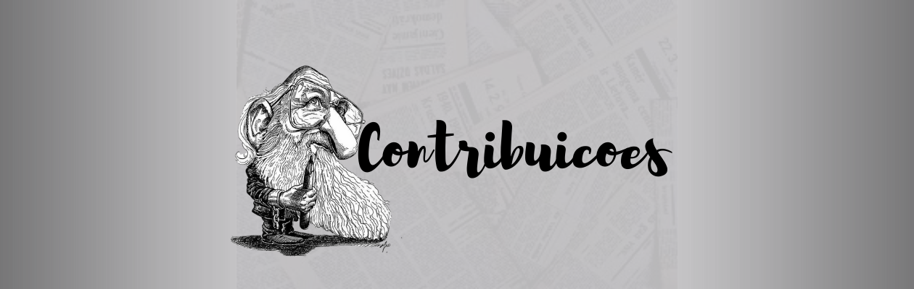
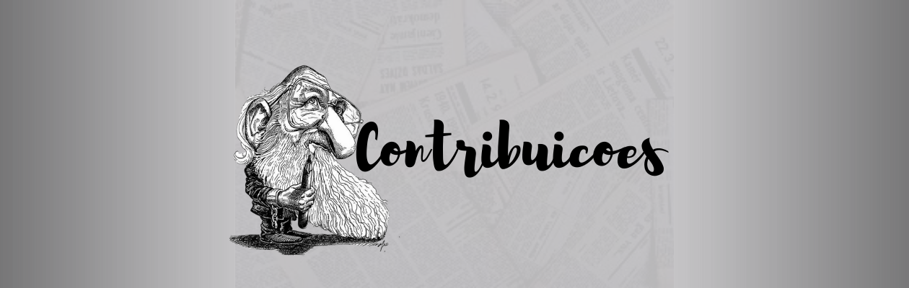

"A educação é um ato de amor, por isso, um ato de coragem" (Paulo Freire).
Paulo Freire (1921-1997) foi um educador brasileiro, criador de um método inovador para
alfabetização de adultos. Seu método foi levado para diversos países.
A data 19 de setembro de 2021 marca o centenário de nascimento do educador, pedagogo e filósofo Paulo Freire. Natural de Recife, o pernambucano é um dos grandes nomes da educação mundial e ficou conhecido internacionalmente pela sua teoria de que a educação é o caminho para a emancipação de sujeitos, para que transformem sua realidade por meio da reflexão crítica. O seu trabalho de alfabetização de adultos é reconhecido mundialmente. Entre as inúmeras obras publicadas estão as compõem a trilogia: “Pedagogia do Oprimido”, “Pedagogia da Esperança”, “Pedagogia da autonomia”.
Em 2018, Maria Margarida Machado, docente da Faculdade de Educação da Universidade Federal de Goiás (UFG), concedeu entrevista para o ANDES-SN sobre a obra e legado do patrono da educação brasileira. “Freire foi um pensador muito importante nas décadas de 50, 60 e 70 e 80. Foi educador atuante em uma perspectiva de educação que buscava colocar no centro da educação pedagógica o direito a uma educação emancipatória”, afirmou a professora naquele ano.
Segundo a docente da UFG, defender a concepção de educação como emancipadora do sujeito representa enfrentar as grandes limitações econômicas e sociais dos estudantes brasileiros. Para ela, Freire combatia não apenas a opressão que decorre da necessidade financeira e da limitação do acesso aos bens materiais, mas também reafirmava a necessidade de combater a mentalidade conservadora. “A mentalidade conservadora, tradicional, tem a ver com o que o sujeito aprende com a sua família, na religião e no trabalho. Nessas relações, essa convivência ao invés de torná-lo um sujeito livre e amoroso, o aprisiona a um conjunto de preceitos morais, éticos e céticos que o distancia de outros seres humanos”, disse Margarida.
 
